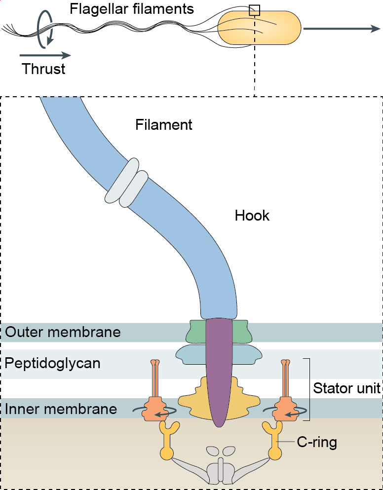
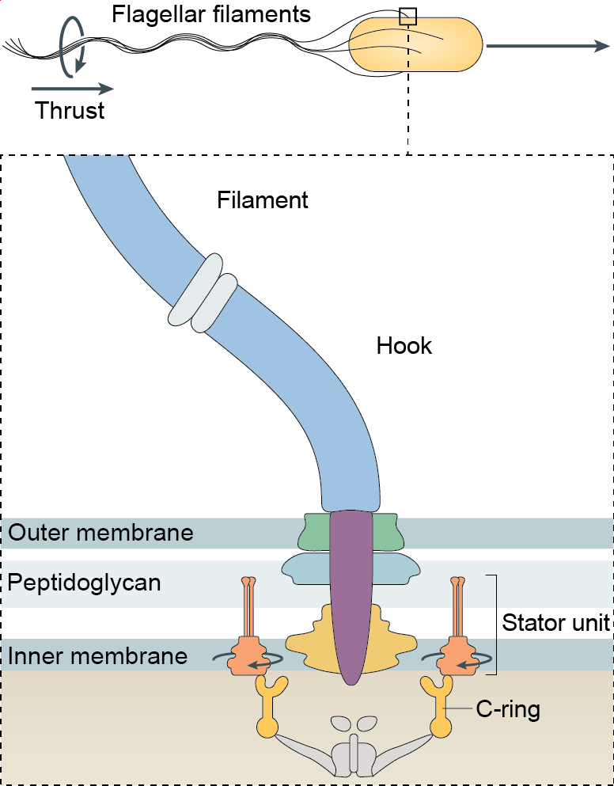

Artwork: Dan Nowakowski/Nicholas Taylor
Mechano-adaptation in a large protein complex
Intersections Science Fellows Symposium
November 2021
Navish Wadhwa
Harvard University
slides for this talk: navishwadhwa.com/talks
A nanoscale motor powers swimming in bacteria
 

How does the motor cope with sudden changes in mechanical load?
Electrorotation allows full control over motor load


Instantaneous
Reversible
Controllable
Electrorotation allows full control on motor load

A change in load triggers stepwise changes in motor speed


The stator remodels in response to load change

Flagellar motor is a bacterial mechanosensor


Acknowledgements

Howard Berg (Harvard)

Yuhai Tu (IBM)
Rob Phillips (Caltech)
Alberto Sassi (IBM)

NIH Pathway to Independence Award
 @NavishWadhwa
@NavishWadhwa